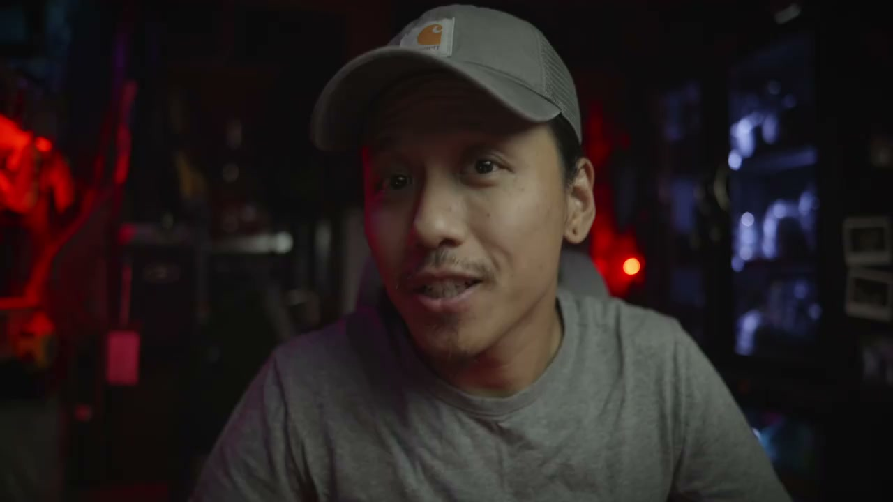
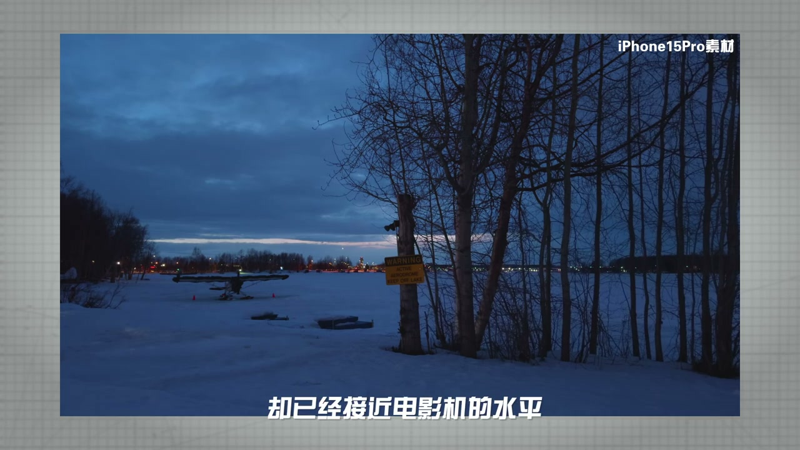
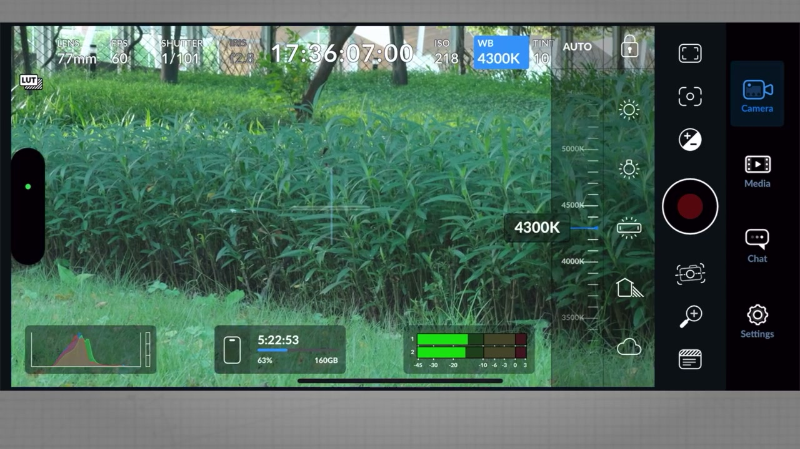
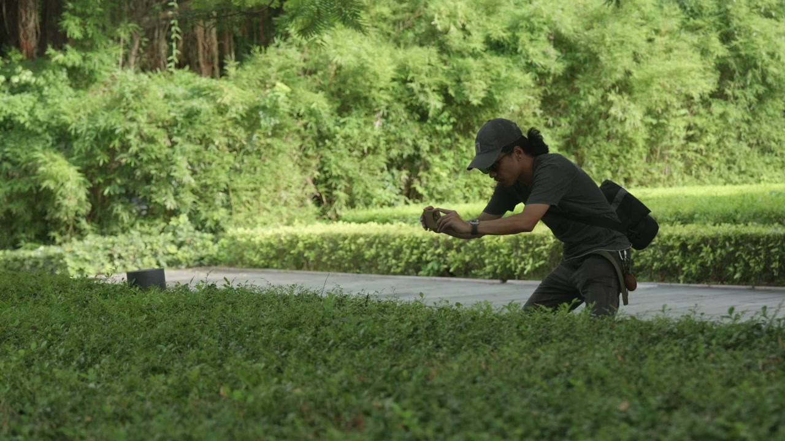
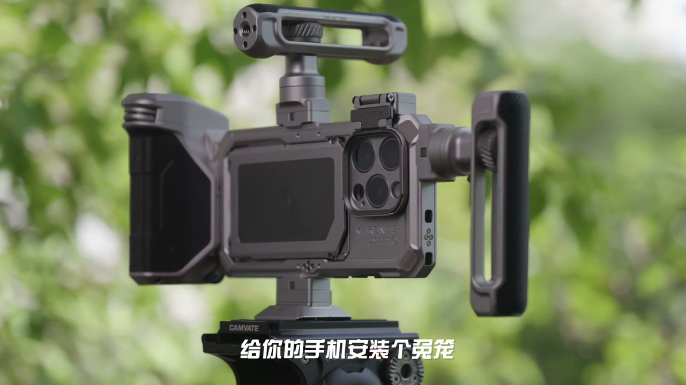
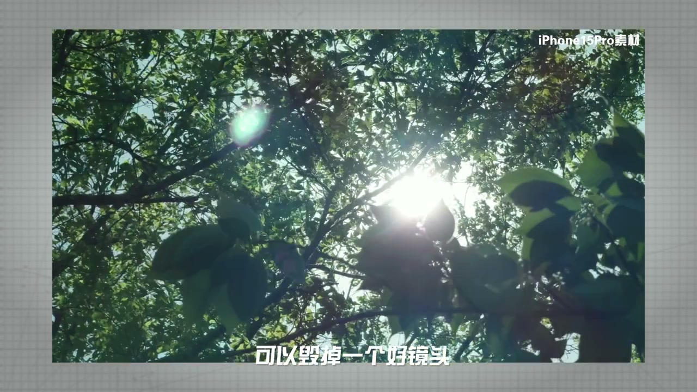
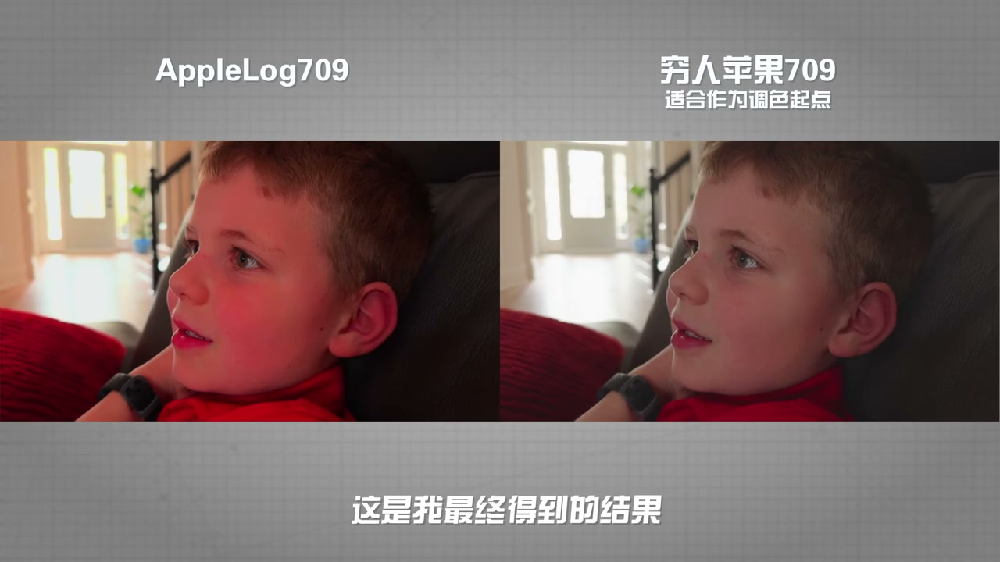

01
中文
iPhone 15 Pro是我认为第一台真正可以当作电影机对待的手机。
EN
The iPhone 15 Pro is the first phone I'd truly treat as a cinema camera.
表达提示first cinema phone（第一台电影机手机）

Scene English · 器材 · iPhone电影机
Why Is Apple's Apple Log Unbeatable?
🎧 语音讲解
Opening conclusion: my take—the iPhone 15 …
情境iPhone 15 Pro是真正可当电影机的手机。
iPhone 15 Pro是我认为第一台真正可以当作电影机对待的手机。
The iPhone 15 Pro is the first phone I'd truly treat as a cinema camera.
表达提示first cinema phone（第一台电影机手机）
手机能否有天取代电影机的话题，便放上辩论桌。
Whether phones will ever replace cinema cameras hit the debate table.
表达提示the debate（辩论话题）
作为照片工具，手机的拍照能力已经逼近主流微单的水平。
As a photo tool, phones now approach mainstream mirrorless levels.
表达提示near mirrorless（逼近微单）
the debate（辩论话题
near mirrorless（逼近微单
Hardware ceiling and algorithm dependence:…
情境硬件触顶，算法是手机影像的出路。
虽然如今手机传感器已经来到了1英寸时代，但在硬件层面我们已经摸到了天花板。
Even with 1-inch sensors, hardware has hit the ceiling.
表达提示hardware ceiling（硬件天花板）
手机的整体尺寸被它的功能定位、使用场景牢牢框死。
The phone's size is locked by its function and use scenarios.
表达提示locked by function（被定位框死）
小米12S Ultra曾探索外接镜头的方案，但那更像是为相机附加了手机功能。
The Xiaomi 12S Ultra explored external lenses—a camera with phone functions.
表达提示camera with phone（附加功能的相机）
hardware ceiling（硬件天花板
locked by function（被定位框死

The harm of over-algorithms: unbridled sha…
情境智能HDR对视频是电影感的杀手。
毫不克制的锐化和饱和度，降噪和AI算法带来的涂抹感。
Unbridled sharpening and saturation, AI smearing from noise reduction.
表达提示over-processing（过度处理）
哪怕你锁死了曝光，算法还是会在拍摄中智能调节画面局部的曝光。
Even with exposure locked, the algorithm adjusts local exposure.
表达提示Smart HDR（智能HDR）
对于视频，不可控的曝光等于扼杀掉了电影感。
For video, uncontrollable exposure kills the cinematic feel.
表达提示kills cinema（扼杀电影感）
over-processing（过度处理
Smart HDR（智能HDR

What Apple Log is: with Apple Log's debut,…
情境Apple Log是灰片，14档动态范围。
Apple Log就是苹果的灰片，和松下的V-Log、索尼的S-Log、大疆的D-Log是一模一样灰灰的感觉。
Apple Log is Apple's log—like V-Log, S-Log, D-Log, all gray.
表达提示log profiles（灰片曲线）
它是一条色彩对比度曲线，为了保留最多的色彩和明暗信息，这条曲线的对比度和饱和度非常低。
It's a low-contrast, low-saturation curve to retain maximum info.
表达提示low contrast curve（低对比曲线）
你需要重新调整对比度、饱和度，才能把素材还原成我们现实中的一面。
You re-adjust contrast and saturation to restore reality.
表达提示restore the footage（还原素材）
Apple Log总共读取的动态范围接近惊人的14档。
Apple Log reads nearly 14 stops of dynamic range.
表达提示14 stops（14档动态范围）
log profiles（灰片曲线
low contrast curve（低对比曲线

The instant-noodle analogy: think of Rec.7…
情境Log是面团，可塑性极强。
假如我们把Rec.709识别素材比做一碗方便面，原始色号文件就相当于面粉，那么Log素材等同于刚和好的面团。
Rec.709 is instant noodles, raw files are flour, and Log is kneaded dough.
表达提示noodle analogy（面条比喻）
让厨师把这碗方便面回炉改造成夏威夷部落披萨，就很为难它了。
Asking a chef to turn noodles into Hawaiian pizza is a stretch.
表达提示too much to ask（为难它）
当iPhone有了更多的色彩信息和动态范围，允许它更容易地与我的微单相机进行色彩匹配。
More color info lets the iPhone color-match my mirrorless cameras.
表达提示color match（色彩匹配）
noodle analogy（面条比喻
too much to ask（为难它

Hardware and high ISO: but Apple Log isn't…
情境专用硬件加持，滚动快门逼近机械快门。
iPhone 15 Pro今天有一个专治处理Log的硬件，所以并不是一个软件更新能变得让早期iPhone通通拥有这条曲线。
The 15 Pro has dedicated Log hardware—no software update gives early iPhones the curve.
表达提示dedicated hardware（专用硬件）
1600 ISO的素材完全可用，现阶段已经非常不容易了。
ISO 1600 footage is fully usable—no small feat.
表达提示ISO 1600 usable（高感可用）
越小的传感器滚动快门越细微。
Smaller sensors have subtler rolling shutter.
表达提示smaller = subtler（越小越细）
更优秀的读取速度代表更自然的画面采集，也意味着后期防抖更加容易。
Better readout means more natural capture and easier stabilization.
表达提示easy stabilization（易防抖）
dedicated hardware（专用硬件
ISO 1600 usable（高感可用

One step from perfect and Blackmagic Cam: …
情境Blackmagic Cam补齐苹果相机App的短板。
Apple Log一口气解决了过度锐化、过度饱和、过度降噪，以及智能HDR算法介入。
Apple Log solved over-sharpening, over-saturation, over-denoising, and Smart HDR.
表达提示solved everything（解决一切）
苹果自带的相机App连手动模式都没有，对待严肃的视频拍摄几乎是不可用的。
The stock camera app has no manual mode—unusable for serious shooting.
表达提示no manual mode（没有手动模式）
这种脏活只有大善人黑魔法来做。
That dirty work is for the philanthropist Blackmagic.
表达提示dirty work（脏活）
Blackmagic Cam可以做到100%的手动操作。
Blackmagic Cam enables 100% manual control.
表达提示100% manual（全手动）
solved everything（解决一切
no manual mode（没有手动模式

The phone's potential isn't exhausted: Bla…
情境开放协议能让手机潜力更充分。
iPhone的潜力并没有被黑魔法完全榨干。
Blackmagic hasn't drained the iPhone's potential.
表达提示not exhausted（未榨干）
BMK上无法设置快门低过视频帧率，那么就无法获得王家卫的慢门效果。
BMK can't set shutter below frame rate, so no Wong Kar-wai slow shutter.
表达提示slow shutter locked（慢门受限）
电影级的标准有高动态、多帧率、低果冻、高录制规格。
Cinema standards: high dynamic range, multi frame rates, low jelly, high specs.
表达提示cinema standards（电影级标准）
not exhausted（未榨干
slow shutter locked（慢门受限

A cinema phone in your pocket and travel a…
情境小巧便携让手机去到更远的目的地。
手机是一台真真正正待在口袋里的电影机。
The phone is a genuine cinema camera in your pocket.
表达提示pocket cinema（口袋电影机）
iPhone同时集成了通讯、剪辑和宣发功能。
The iPhone integrates communication, editing, and publishing.
表达提示all-in-one（功能集成）
影视器材的重量和体积是与你得到的素材量成反比的。
Gear weight and volume are inversely proportional to the footage you get.
表达提示inverse proportion（成反比）
手机能让你去到更远更难的目的地。
A phone lets you reach farther, harder destinations.
表达提示farther destinations（更远目的地）
pocket cinema（口袋电影机
all-in-one（功能集成

The downsides and solutions: I've hyped th…
情境鬼影是手机最被忽略的阴伤。
很多朋友认为手机视频最大的问题，是无法获得浅景深。
Many think the biggest issue is no shallow DOF.
表达提示no shallow DOF（无浅景深）
有一个最被忽略的阴伤，我认为那是鬼影。
The most overlooked downside is ghosting.
表达提示ghosting（鬼影）
鬼影和防抖加起来可以毁掉一个好镜头。
Ghosting plus stabilization can ruin a good shot.
表达提示ruin a shot（毁掉镜头）
我唯一的解决方法，就是舍弃机身防抖而采用物理防抖。
My only fix: drop IBIS and use physical stabilization.
表达提示physical stabilization（物理防抖）
no shallow DOF（无浅景深
ghosting（鬼影

Monitoring and LUT issues: the big screen …
情境低机位监看难，可用松下LUT还原。
只要低机位仰拍或者高机位俯拍，那就是场噩梦，你无法监看构图和焦点。
Any low or high angle is a nightmare—you can't check composition or focus.
表达提示monitoring nightmare（监看噩梦）
苹果的709还原LUT却很垃圾，通过FCP自带的LUT还原后，红色溢出相当严重。
Apple's 709 restore LUT is garbage—red blows out via FCP.
表达提示bad LUT（垃圾LUT）
我试了一下松下V-Log的还原LUT，套在苹果Log的素材上，效果竟出奇的好。
Panasonic's V-Log restore LUT on Apple Log footage—surprisingly great.
表达提示V-Log LUT（松下LUT）
bad LUT（垃圾LUT
V-Log LUT（松下LUT

Competition and expectations: this is an i…
情境硬件卷回赛场，期待国产品牌追上。
放在2024年的手机海洋里，几乎都快算不上旗舰水平。
In the 2024 phone sea, it's barely flagship-level.
表达提示barely flagship（难称旗舰）
要不是国产品牌往死里卷硬件，估计苹果还在用主摄1200万像素的传感器。
Without domestic brands racing on hardware, Apple would still ship 12MP sensors.
表达提示hardware race（卷硬件）
当OPPO Log、华为Log、Vivo Log陆续推出后，影像的较量将重新回到硬件的比拼。
Once OPPO Log, Huawei Log, Vivo Log arrive, the battle returns to hardware.
表达提示back to hardware（回到硬件）
barely flagship（难称旗舰
hardware race（卷硬件
说iPhone定位
说算法依赖
说Apple Log
说面团比喻
说Blackmagic Cam
大传感器难成主流。
智能HDR扼杀电影感。
Apple Log靠硬件。
手机能去更远的地方。
夜间防抖用物理方案。